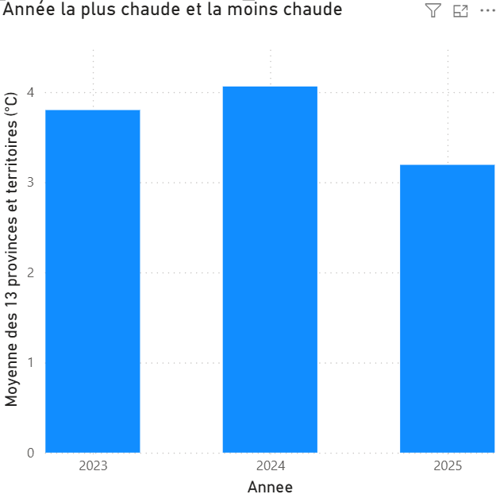
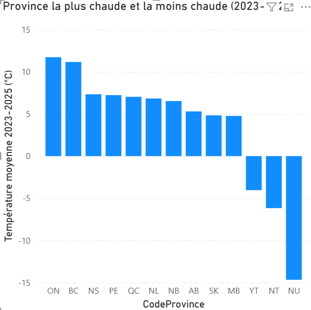
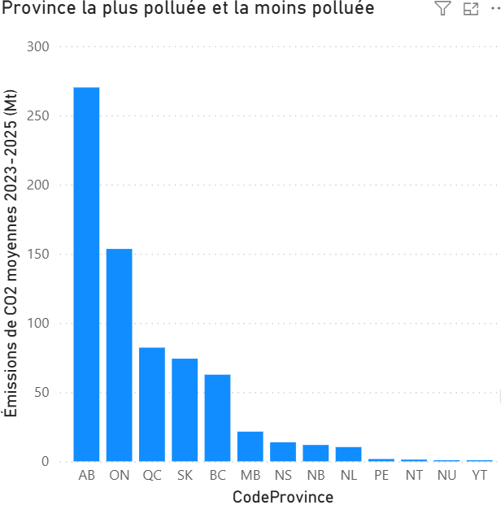
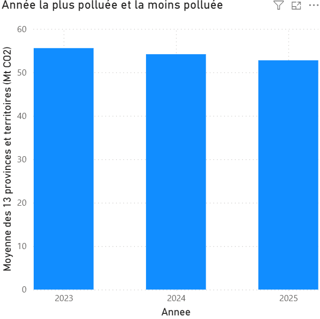
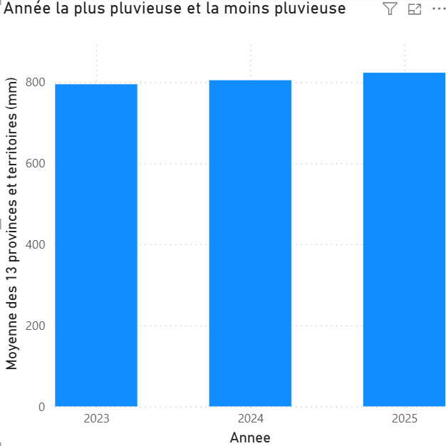
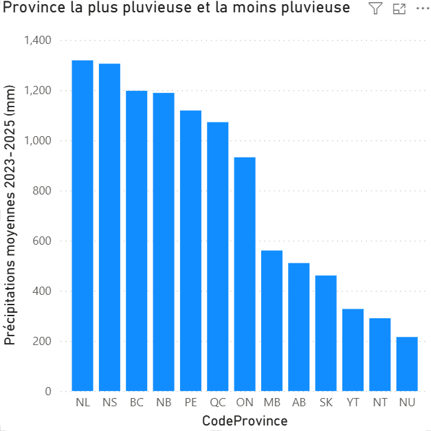

Résultats
6 questions d'analyse les plus demandées

2024 est l'année la plus chaude (4,06 °C) et 2025 la moins chaude (3,19 °C)

l'Ontario est la province la plus chaude (11,73 °C) et le Nunavut le territoire le moins chaud (−14,67 °C).

2023 est l'année la plus polluée (55,58 Mt CO₂) et 2025 la moins polluée (52,77 Mt CO₂).

l'Alberta est la province la plus polluée (270,10 Mt CO₂) et le Yukon le territoire le moins pollué (0,53 Mt CO₂).

2025 est l'année la plus pluvieuse (823,15 mm) et 2023 la moins pluvieuse (794,75 mm).

Terre-Neuve-et-Labrador est la province la plus pluvieuse (1318,70 mm) et le Nunavut le territoire le moins pluvieux (215,43 mm).